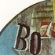
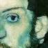
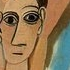
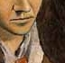
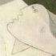
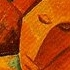

Pablo Picasso (25 ottobre 1881 - 8 aprile 1973) pittore spagnolo di fama mondiale, fu sicuramente uno dei maestri della pittura del Novecento. Usava dire agli amici di considerarsi "anche un poeta".
Nacque a Malaga (Spagna), figlio di Jose Ruiz Blasco, anch'egli pittore ed insegnante, e di Maria Picasso Lopez. Il suo nome completo era Pablo Diego Jose Santiago Francisco de Paula Juan Nepomuceno Crispin Crispiniano de los Remedios Cipriano de la Santisima Trinidad Ruiz Blasco y Picasso Lopez.
Ancora adolescente, nel 1895 Picasso si trasferisce con la famiglia a Barcellona e comincia a seguire le lezioni di suo padre sulla pittura e poi entra nella prestigiosa Accademia di Belle Arti di Madrid, ma dopo q ualche mese ritorna a Barcellona per aprire un suo studio, all'epoca aveva solo sedici anni.
I suoi primi dipinti furono soprattutto figure tristi e tragiche e firmava le sue opere con il nome di P. Ruiz, poi per distinguersi dal padre aggiunse il nome della madre Picasso e poi decide a vent'anni di firmarsi semplicemente Picasso
Un ruolo fondamentale nella vita del pittore fu la politica tanto che nel 1944 si iscrisse al Partito Comunista e partecipo a conferenze internazionali per la pace.
Nel 1953 viene lasciato da Francoise ma ben presto il suo posto viene occupato da Jacqueline Roque (una giovane donna) che nel 1961 sposo e si trasferiscono vicino a Cannes.
Gli ultimi anni della sua vita preferi passarli come un recluso nella sua casa con sua moglie, questi furono i suoi anni piu prolifici come artista.
Mori l'8 aprile 1973 all'eta di 91 anni